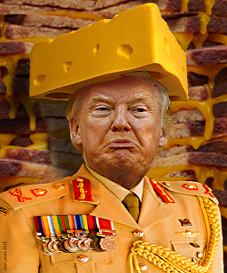
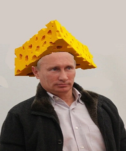
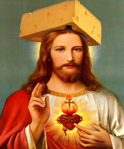

The Team
Jimmy
Cheese Facility Officer
ons meesterbrein
meesterjimmy@baas.nl

Marijn
Cheese Marketing Officer
ons finalcieel expert
meesterMarijn@baas.nl

Nash
Cheese HR Officer
oUr PeOpLe pErSon
meesterNash@baas.nl

Nassim
Cheese Financial Officer
$$$$$$$
meesterNassim@baas.nl
Stephan
Cheese Logistics Officer
man man man man
meesterStephan@baas.nl
Burak
Cheese Executive Officer
Baas man
meesterbaas@baas.nl

Auke
Cheese IT Officer
Computer man
meesterAuke@baas.nl